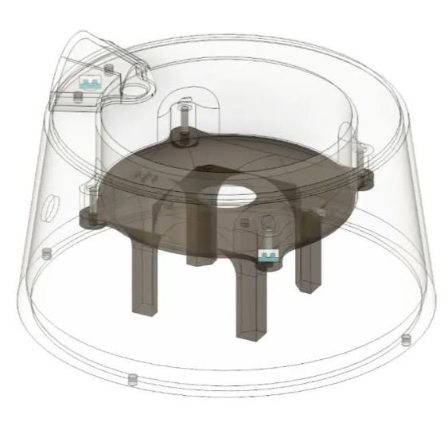
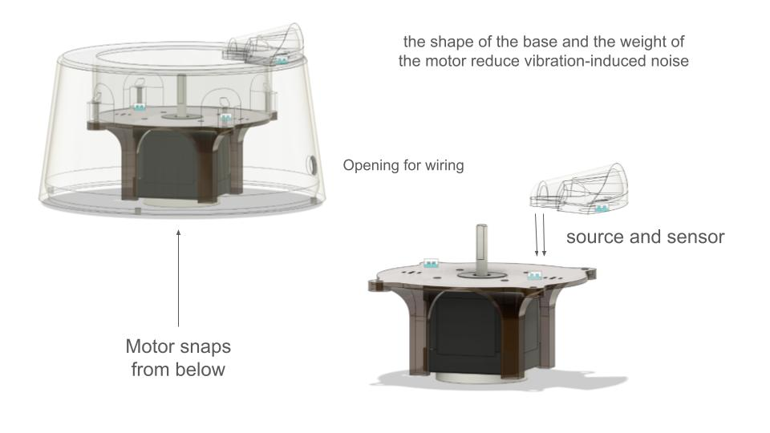
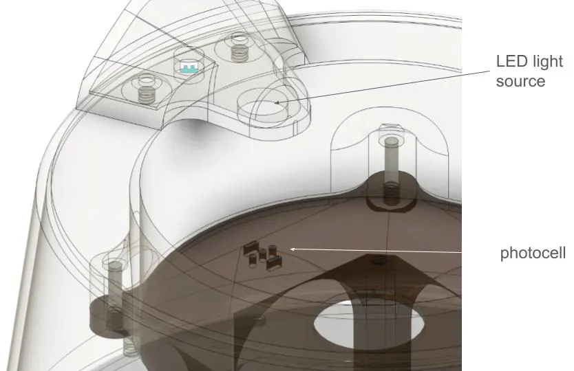
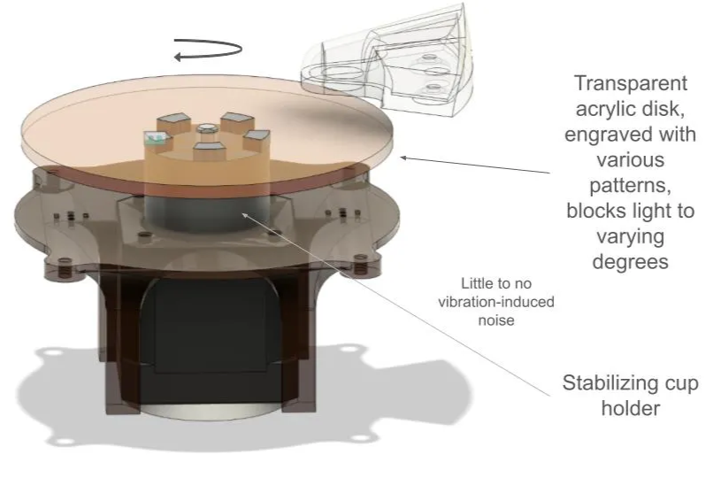
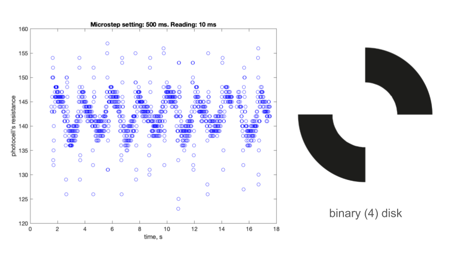
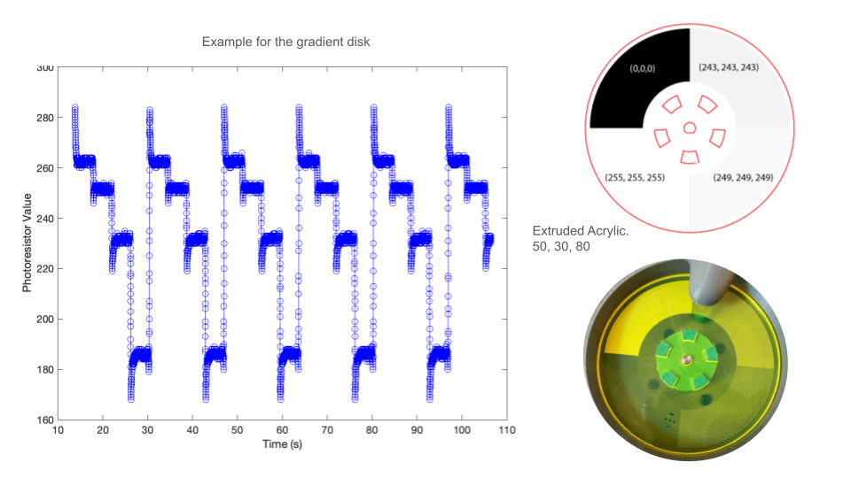
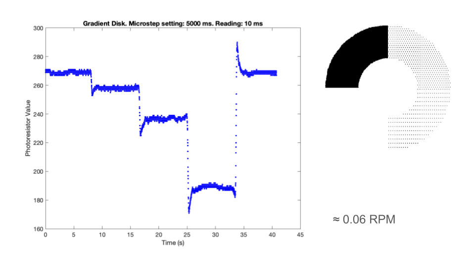
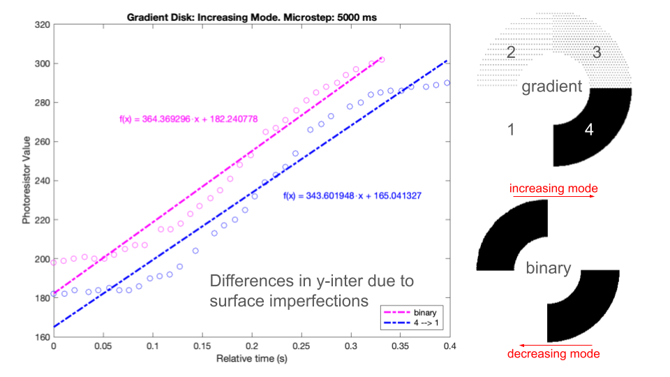
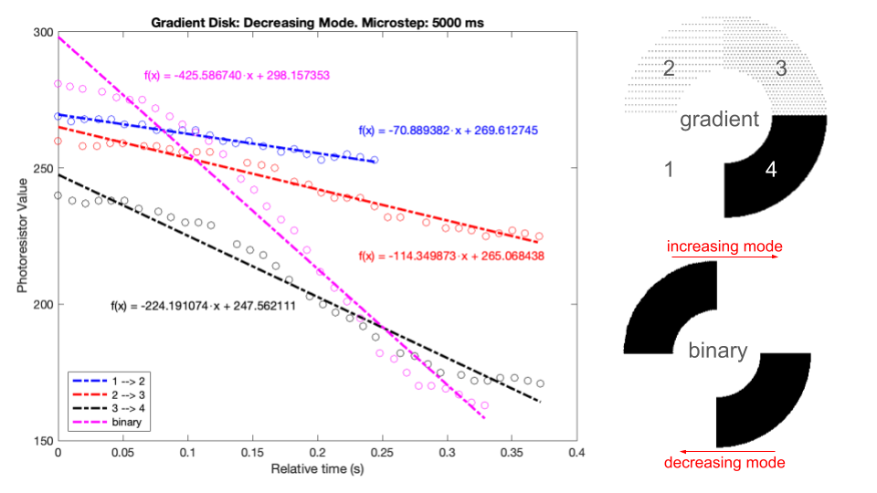

Designed and built a precision optical encoder for experiments in novel sensing and encryption methods, combining mechanical design, fabrication, embedded coding, and data analysis into a validated research prototype.
Objective: At MIT CSAIL, I designed and built a precision optical encoder to support experiments on novel sensing and encryption methods. The encoder translates rotational motion into binary or gradient optical signals using engraved disks and a photodetector/LED gate.
This project spanned mechanical design, fabrication, embedded coding, and data analysis, providing a validated prototype that supported research on high-resolution, non-capacitive position tracking.

Optical encoder prototype developed at MIT CSAIL for sensing and encryption experiments.
My Role
CAD & Fabrication. Designed the encoder housing and interchangeable disk mounts in Fusion 360 with tolerance-controlled fits and low runout. Fabricated disks using CNC machining, 3D printing, and laser engraving.
Embedded Development. Wrote optimized C code for Arduino with ring-buffered DMA to maximize throughput and minimize dropped samples during live data acquisition.
Data Analysis. Built MATLAB pipelines for calibration, regression with prediction intervals, transient detection, normalization, and statistical validation. Used Python and R for further analysis and hypothesis testing.
Experimentation. Ran engraving experiments across binary and gradient patterns, tested resolution limits down to about 3.2 mm features, and logged environmental variables to account for filament expansion and vibration artifacts.

Encoder housing and interchangeable disk mounts used for fabrication and testing.
Validation
Benchmarked sustained throughput, improving transfer speed between Arduino and MATLAB and eliminating live plotting delays.
Conducted resolution tests from 0.4 mm to 12.4 mm features and established a practical limit near 3.2 mm due to nozzle expansion and photocell geometry.
Ran optical transmission tests with binary and gradient disks, verifying predictable signal slopes across speeds around a 0.06 RPM baseline.
Compared ambient-light and LED illumination setups and quantified performance improvements under controlled LED conditions.

Closer look at the LED gate

Experimental setup used for throughput, illumination, and transmission testing.
To ensure the encoder could reliably distinguish patterns and resolutions, I ran comparative tests with binary and gradient engraved disks under controlled illumination and motor speed.
Binary Disks. Produced sharp, step-like transitions and validated clean cutoff thresholds with more than 90% repeatability.
Gradient Disks. Generated smooth signal slopes and demonstrated predictable light-intensity mapping across feature depth.
Resolution Benchmark. Established a minimum reliable feature size of about 3.2 mm given laser nozzle expansion and photocell geometry.

Test results for a binary disk.

Comparative test results for binary and gradient disk behavior.

Resolution benchmarking across engraved feature sizes.

Engraving imperfections introduce a margin of error for slopes.

Transitions between different gradients produce varying slopes.
Challenges Overcome
Eliminated data latency by restructuring code to decouple motor timing from sensor logging.
Standardized laser engraving across multiple machines by troubleshooting differences in depth and shading.
Mitigated vibration-induced noise by redesigning the encoder base and adding a stabilizing cup holder.
Discovered nonlinear relationships between shading depth and light transmission, informing disk design rules.
Aligned servo motor speed across encoder tests to ensure reproducible reference signals.
Outcomes
Delivered a working optical encoder prototype with validated resolution, repeatable data acquisition, and robust housing.
Demonstrated the ability to fabricate high-precision, tolerance-sensitive assemblies and integrate mechanical, electrical, and software systems.
Produced analysis pipelines and datasets that were handed off to CSAIL researchers for further exploration of novel encoder geometries and encryption methods.